20160421
> File / CAM
Gerber
光绘文件又称为 Gerber 、菲林(Film),也可称为CAM文件
在导出光绘文件之前要必须保证PCB检查无误并且所有铺铜层全部重新Flood
一个正常的光绘文件应包括 : N + 6
其中N指层数
6指 :
Solder Mask Top 顶层阻焊层 顶层绿油层
Solder Mask Bottom 底层阻焊层 底层绿油层
Silkscreen Top 顶层丝印层 顶层白油层
Silkscreen Bottom 底层丝印层 底层白油层
Drill Drawing 钻孔参考层
NC Drill NC钻孔层
给PCB板厂的 Gerber 文件
a. 走线层，（包括信号层、电源层和地层）
如2层板便是顶层和底层线路共两层线路
4层板则是顶层、第2层、第3层、及底层线路共4层线路
b. 阻焊层，在不需要焊接区域涂上一层阻焊及防氧化材料，一般为绿油，这类主要是Soldermask Layer Top/Bottom
c. 丝印层 用于标示零件范围、方向及序号。一般包括（Top/Bottom Silkscreen Layer）
d. NC数据及钻孔图，而需要多少的NC数据，则视PCB板有多少款的盲埋孔，即是有多少款Drill Pair(钻孔对)
4层板钻孔文件和孔位图共2 个
* 当需要堵住过孔时(即平时说的过孔盖油)，可以该Gerber文件设置中去掉via，预览时见不到过孔，即满足要求。
d. 钻孔层：（drilldraw）
e. 铜网层：主要用于组装工厂在放置SMD零件于电路板前，需透过此冶具在SMD
零件的PAD上涂一层锡膏，这个一般由(Paste mask Layer Top/Bottom)来
实现
f. 装配图：(Assembly)
***另外，有些贴装厂可能会要求提供坐标文件，这种文件实现上其实就是通过
file/export实现，在export配置窗的section中，只选择part,即不导出网络，通常还
会要求你导成低版本兼容格式，一般在format单选框中选PowerPCB V4.0基本就
够了
删除选中的碎铜
Edit / Find / 查找条件(Find By) : Isolated Pour and Action / Select / Delete
 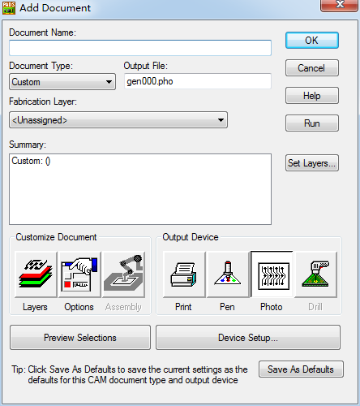
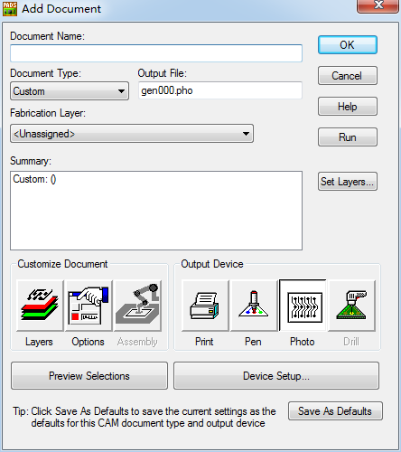
走线层(Top)
文档名称(Document Name) : TopLayer
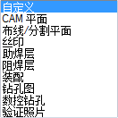
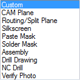
文档类型(Document Type) : 布线/分割平面(Routing/Split Plane)
制造层(Fabrication Layer) : Top
输出文件(Output File) : TopLayer.pho
输出设备(Output Device) : 光绘(Photo)
自定义文档(Customize Document) : 层(Layers)
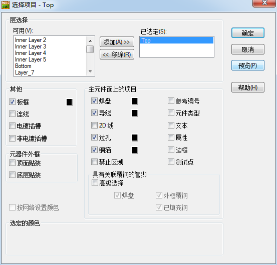
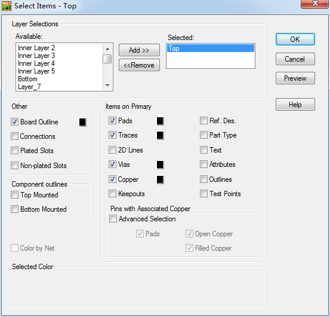
已选定(Selected) : Top
主元件面上的项目(Items on Primary) :
勾选 焊盘(Pads)、导线(Traces)、过孔(Via)、铜箔(Copper)
其他(Other) :
勾选 板框(Board Outline)
具有关联覆铜的管脚(Pins with Associated Copper) :
全部勾选 高级选择(Advanced Selection)
---- Top和Bottom层时要将此项选中
自定义文档(Customize Document) : 选项(Options)
X偏移 : 10000
Y偏移 : 10000
---- 调整偏移量至符合CAM工作区内位置
---- 偏移量最好是所有Gerber及NC Drill都是相同设置
设置设备(Device Setup)
光绘图机设置
填充宽度(Fill width) : 1mils
---- 默认为10mils 更改为1mils
点击 重新生成(Regenerate)
---- 此为重新生成D码,我们在其中一个信号层设置这一项就可以了,他会应用到所有的光绘文件
在转换时，如果不希望把圆弧打碎的话，则 设备设置 / 高级 / Circular Interpolation : Full /
孔径(Apertures)表文件是art01.rep，它列出了设计中所用的所有孔径(Apertures)
Board 检视范围为板框(Board Outline)
Extents 检视范围为CAM的工作范围
Workspace 检视范围为工作区
CAM Preview中黑色的为铜箔走线
阻焊层Solder Mask Top 顶层绿油层
文档名称(Document Name) : Solder Mask Top
文档类型(Document Type) : 阻焊层
层关联性 : Top
输出设备(Output Device) : 光绘(Photo)
自定义文档(Customize Document) : 层(Layers)
已选定(Selected) : Top
主元件面上的项目(Items on Primary) :
勾选 焊盘(Pads)、测试点(Test Point)
已选定(Selected) : Solder Mask Top
勾选 焊盘(Pads)、2D Line、文本(Text)、铜箔(Copper)、测试点(Test Point)
其他(Other) :
勾选 板框(Board Outline)
具有关联覆铜的管脚(Pins with Associated Copper) :
高级选择(Advanced Selection)
---- 如有元件焊盘是使用了关联覆铜方式，就要将此项选中
自定义文档(Customize Document) : 选项(Options)
焊盘放大(缩小)至(Over(Under)size Pads By) : 4
---- 此为设置阻焊补偿,默认为10mils,我们将其改为4mils就可以
负片输出 即没有勾选的就会有绿油覆盖(Gerber上看是白的)，需要露铜(不需要绿油)的地方就勾选(Gerber上看是黑的)
助焊层(Paste Mask Top) 焊盘锡膏层 钢网层
文档名称(Document Name) : Paste Mask Top
文档类型(Document Type) : 助焊层
层关联性 : Top
输出设备(Output Device) : 光绘(Photo)
自定义文档(Customize Document) : 层(Layers)
已选定(Selected) : Top
主元件面上的项目(Items on Primary) :
勾选 焊盘(Pads)、铜箔(Copper)、测试点(Test Point)
已选定(Selected) : Paste Mask Top
Lines、铜箔(Copper)、测试点(Test Point)
其他(Other) :
勾选 板框(Board Outline)
丝印(Silkscreen Top) 顶层白油层
文档名称(Document Name) : Silkscreen Top
文档类型(Document Type) : 丝印(Silkscreen Top)
层关联性 : Top
输出设备(Output Device) : 光绘(Photo)
自定义文档(Customize Document) : 层(Layers)
已选定(Selected) : Top
主元件面上的项目(Items on Primary) :
勾选 参考编号(Ref.Des)、边框(Outline)
已选定(Selected) : Silkscreen Top
勾选 参考编号(Ref.Des)、2D Line、文本(Text)、边框(Outline) or 铜箔(Copper)
其他(Other) :
勾选 板框(Board Outline)
元器件外框
勾选 顶层贴装(Top Mounted)
勾选 底层贴装(Bottom Mounted)
钻孔图(Drill Drawing) 输出钻孔孔位和钻孔信息(大小、镀金)的CAM数据
文档名称(Document Name) : Drill Drawing
文档类型(Document Type) : 钻孔图(Drill Drawing)
层关联性 : Top 如果板是通孔,那随便选哪一层都是一样的
已选定(Selected) : Top
主元件面上的项目 :
焊盘(Pads)、Lines、过孔(Via)、Text
已选定(Selected) : Drill Drawing
Lines、Text
其他(Other) :
勾选 板框(Board Outline)
因为一个PCB文件没有顶面和底面钻孔层之分
因此一个Gerber文件只设一个钻孔光片文件
板位图跟表格重叠在一起时做如下操作 :
自定义文档(Customize Document) : 选项(Options) / 绘图选项 / 钻孔符号(Drill Symbols) / 钻孔图选项(Drill Drawing Options) /
在钻孔图(Drill Chart)选项下面的位置(Location) 下输入合适的 X 和 Y 值，便可以将钻孔表的位置移动到合适的位置。
例如输入X：0，Y：2.5
并点击 右下角的 重新生成(Regenerate)
---- 此为重新生成钻孔符号
数控钻孔(NC Drill) 输出钻孔文件,用于控制钻孔设备
转NC Drill 前一定要清楚此板是否为盲/埋孔，通过 Setup / Drill Pairs 查看
文档名称(Document Name) : NC Drill
文档类型(Document Type) : 数控钻孔(NC Drill)
自定义文档(Customize Document) : 选项(Options) / NC钻孔选项 /
转非盲/埋孔 NC Drill :
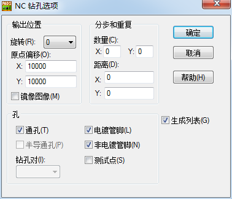
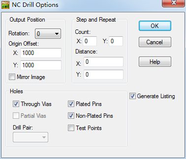
原点偏移 :
X偏移 : 10000
Y偏移 : 10000
---- 此偏移量值跟上面的偏移量值设置同样大小
选择 : 通孔(Through Via)、金属化孔(Plated Pi)、非金属化孔(Non-Plated Pi)
转盲/埋孔 NC Drill :
选择 : 半导通孔(Partial Via)
取消 : 通孔(Through Via)、金属化孔(Plated Pi)、非金属化孔(Non-Plated Pi)
钻孔对Drill : 选择盲/埋孔类型
注意 应对应不同类型的半导通孔(Partial Via)在输出时分别命名。如忘记更改，最终将只有最后一种转换有效，即drl001.drl
使用PADS Layout 的一个自动生成CAM无模命令 : @camdocs (需要手动配置钻孔文件)
贴片所需资料 :
电子BOM、整拼板钢网资料、和贴片坐标(需包含MARK坐标)
贴片坐标导出方法 :
>Tools / Basic Scripts / Basic Scripts... / 17-Excel Part List Report / Run /
or
> File / CAM Plus /
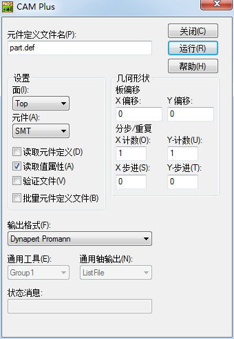
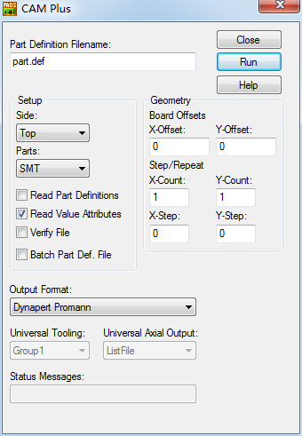
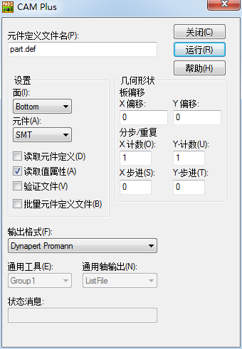
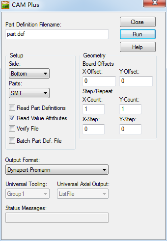
面(Side) : Top or Bottom
元件(Parts) : SMT
勾选 读取值属性(Read Value Attributes)
输出格式(Output Format) : Dynapert Promann